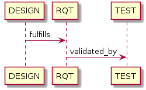

Usage¶
Contents
Required sphinx options¶
By default, sphinx (sphinx-build) performs an incremental build: it only parses the changed files and generates new output for changed files. As this plugin generates automatic reverse relations, the incremental build option of sphinx needs to be disabled. This can be done using the -E option:
sphinx-build -E <other_options>
- Rationale
The plugin allows linking documentation items through relations. If a forward relation from item-A (in document-a.rst) to item-B (in document-b.rst) is created, the reverse relations from item-B to item-A is automatically created. With incremental builds, documents only get re-generated when they are changed. This means the automatic reverse relation cannot be created if that document-B was not touched. By disabling incremental builds, it is made sure every document is updated (with automatic reverse relations) on every re-build.
The plugin assumes incremental builds are disabled, as this makes the implementation of the plugin much easier.
Defining documentation items¶
Documentation items can be defined using the item directive, specifying:
the name (id) of the documentation item
caption or short description of the documentation item
attributes for the documentation item
internal/external relationships to other documentation items (details in next paragraph)
content of documentation item including any RST content, e.g. text, titles, images, formulas, code-blocks
.. item:: SWRQT-MY_FIRST_REQUIREMENT Caption of my first requirement
:value: 400
:status: Approved
:validated_by: ITEST-MY_FIRST_INTEGRATION_TEST
:ext_polarion_reference: project_x:workitem_y
:nocaptions:
According to the Polarion reference, the software **shall** implement my first requirement.
Attributes can be added to the item, using the configured attribute keys in Default config (e.g. value in the above example). The content of the attribute is treated as a single string and should match the regular expression in configuration.
The relations to other documentation items can be specified as:
a space-separated list of item ID’s, or
items can be linked to on a newline (tabulated)
.. item:: SWRQT-MY_FIRST_REQUIREMENT Caption of my first requirement
:validated_by:
ITEST-MY_FIRST_INTEGRATION_TEST
ITEST-MY_SECOND_INTEGRATION_TEST
The output will contain hyperlinks to all related items. By default, the caption for the target item is displayed for each of these related items. With the option nocaptions these captions can be omitted.
Adding relations outside of the item definitions¶
In some cases, it’s useful to add relations outside of the definition of the items
involved. In that case, you can use the item-link directive as follows:
.. item-link::
:sources: RQT1 RQT2
:targets: TST3 TST4 TST5
:type: validates
This directive has no representation in the documentation build output. It will
just add an additional relationship to the items mentioned in sources and
targets.
Changing targets or removing relationships¶
In some cases, it’s useful to change the target for a specific relationship, e.g. when the target is not defined
as an item.
All items that are linked to this target via the specified relationship will be linked to the new target instead.
It’s also possible to remove all relationships to a given target by providing an empty value for the target option.
Example usage of the item-relink directive:
.. item-relink::
:remap: RQT-OLD_PROJECT
:target: RQT-NEW_PROJECT
:type: validates
- remap
required, single argument
The original target of the source-target pair(s) to be remapped. If it is not defined as an item, it will be removed as a placeholder item from the collection of traceable items, thus, preventing any warning that it’s undefined.
- target
required, single argument
The new target for the source-target pair(s) to overwrite. Leave it empty to remove the relationships instead of altering their target.
- type
required, single argument
Relationship type, for which the values for the
remapandtargetoptions are the target. The value must not be empty.
This directive has no representation in the documentation build output.
Adding attributes outside of the item definitions¶
In some cases, it’s useful to add attributes outside of the definition of the items
involved. In that case, you can use the attribute-link directive as follows:
.. attribute-link::
:filter: RQT-
:asil: D
:status: Approved
This directive has no representation in the documentation build output. It will just add an additional attribute(s) to the items of which their ID.
In the above example, the asil and status attributes with given values get
added to all items that have an ID that starts with RQT-. If your documentation defines
items RQT-1 and RQT-11, but you only want to add an attribute to item RQT-1, you
should use the filter option with value RQT-1$. If the filter option is missing,
all items will be affected. Newline characters in the filter regex get removed.
Note
This directive overwrites any attribute values configured in the item directive.
Adding description to attributes¶
Section Valid attributes explain how attributes can be added to the configuration. It is possible to add content to the attributes. A detailed description can be added to an attribute definition:
The name (id) of the attribute needs to fully match the configured attribute. This name is not case sensitive.
Caption or short description of the attribute.
Content of attribute including any RST content including text, images, formulas, code-blocks, etc.
.. item-attribute:: status The status of a requirement
The status of the requirement explains whether it is *draft*, *under-review*, *approved* or *invalid*.
Configuring attribute order¶
By default, attributes get sorted naturally. This default behavior can be changed by use of the dedicated
attribute-sort directive. The filter option allows filtering on item IDs. Its value gets treated as a regular
expression. If this option is missing, the configuration will be applied to all items. The sort option must be a
list of attributes, of which the order is used to sort the attributes of those items that match the filter regex.
Attributes that are missing from this list get sorted naturally and appended afterwards.
.. attribute-sort::
:filter: RQT-
:sort: status value aspice
Manual link to documentation items¶
Manual links in RST documentation to any of the documentation items is possible using the :item: role:
For validating the :item:`SWRQT-MY_FIRST_REQUIREMENT`, we plan to use setup x in the y configuration.
Flat list of documentation items¶
A flat list of documentation items can be generated using a Python regular expression filter:
.. item-list:: All software requirements
:filter: SWRQT
:status: Appr
:nocaptions:
:showcontents:
where SWRQT (filter argument) can be replaced by any Python regular expression. Documentation items that match their ID to the given regular expression end up in the list.
where status can be replaced by any configured attribute, and Appr can be replaced by any Python regular expression. Documentation items of which the status attribute matches the given regular expression end up in the list.
By default, the caption of every item in the list is shown. By providing the nocaptions flag, the caption can be omitted. This gives a smaller list, but also less details.
By default, the contents of every item in the list is hidden. By providing the showcontents flag, the contents can be shown. This can significantly lengthen the list.
Matrix with attributes of documentation items¶
A matrix listing the attributes of documentation items can be generated using:
.. item-attributes-matrix:: Attributes for requirements
:filter: SWRQT
:status: Appr
:attributes: status
:sort: status
:reverse:
:transpose:
:nocaptions:
where the filter argument can be replaced by any Python regular expression. Documentation items matching their ID to the given regular expression end up in the list.
where status can be replaced by any configured attribute, and Appr can be replaced by any Python regular expression. Documentation items of which the status attribute matches the given regular expression end up in the list.
where the attributes argument contains a space-separated list of configured attributes to create a column for, in which the values for that attribute are listed.
Above arguments can be avoided, or left empty, in which case the table will contain all configured attributes and all documentation items.
Documentation items matching their ID to the given filter regular expression end up as rows in the generated table. The attributes end up as columns in the generated table. Documentation items that don’t have a value for a certain attribute will have an empty cell at the corresponding location.
By default, the caption for every item in the table is shown. By providing the nocaptions flag, the caption can be omitted. This gives a smaller table, but also less details. If you only care about the captions and want to hide the item IDs, set the onlycaptions flag instead.
By default, items are sorted naturally based on their name. With the sort argument it is possible to sort on one or more attribute values alphabetically. When providing multiple attributes to sort on, the attribute keys are space-separated. With the reverse argument, the sorting is reversed.
By default, the attribute names are listed the header row and every item takes up a row. Depending on the number of items and attributes it could be better to transpose the generated matrix (swap columns for row) by providing the transpose flag.
Optionally, the class attribute can be specified to customize table output, especially useful when rendering to LaTeX. Normally the longtable class is used when the number of rows is greater than 30 which allows long tables to span multiple pages. By setting class to longtable manually, you can force the use of this environment.
Traceability matrix of documentation items¶
A traceability matrix of documentation items can be generated using:
.. item-matrix:: Requirements to test case description traceability
:source: RQT-
:target: [IU]TEST
:sourcetitle: Software requirements
:targettitle: Integration and unit test cases
:type: validated_by
:sourcetype: fulfilled_by
:status: Appr
:sourcecolumns: asil status
:targetcolumns: result
:hidetarget:
:group: bottom
:nocaptions:
:stats:
:hidetitle:
:coverage: >= 99.5
Documentation items matching their ID to the given source regular expression end up in the leftmost column of the generated table. Documentation items matching their ID to the given target regular expression(s) with a relationship that is included (see type argument) will end up in the right-hand column(s) of the generated table.
Special note on external relations: This directive allows showing external relationships, but has some limitations in doing so:
The external relation needs to be specified explicitly in the type option.
No regex filtering on target item names is supported.
External items can only be used as source when the regex of the source option does not match any internal items.
External relationships are ignored when linking via intermediate items.
- source
optional, single argument
Python-style regular expression used to filter the source items (left column) based on their names. When omitted, no filtering is done on the source item names.
- target
optional, multiple arguments (space-separated)
Python-style regular expression(s) used to filter the target items (right columns) based on their names. Multiple arguments will result in multiple target columns, each filtered by their respective regex. When omitted no regex filtering is done on the target item names
- sourcetitle
optional, single argument
Title of the left “Source” column in the matrix. When omitted, the column title defaults to “Source”
- targettitle
optional, multiple arguments (comma-separated)
Title(s) of the right “Target” column(s). In case multiple arguments are given for the target option, the same amount of targettitle arguments must be given. When omitted (only possible if 0 or 1 target argument is given), the right column title defaults to “Target”
- type
optional, multiple arguments (space-separated)
The list of relationships that should be used to filter the target columns. The relationships considered for filtering are from the “Source” items to the “Target” items. When multiple arguments are provided, the target column will show items that have any of the given relationships provided, i.e. the same filtering is applied to all “Target” columns in the matrix. When omitted, all possible relations are considered except for external relations.
- sourcetype
optional, multiple arguments (space-separated)
The list of relationships that all source items should have. This option is unrelated to the target option and is solely used to filter source items - in addition to the source filter.
- <<attribute>>
optional, single argument
Python-style regular expression used to filter the source items (left column) based on their attributes. The attribute value is not used to filter target items, unless the optional
:filtertarget:flag is set. When omitted, no filtering is done on the source item attributes.- filtertarget
optional, flag
When enabled,
:<<attribute>>:filtering is done on target instead of source items.- sourcecolumns
optional, multiple arguments (space-separated)
A list of attributes and/or relationships. For each attribute, the value for each source item gets added to the matrix in a new column, after the column that contains the source items. For each relationship, a column with the items linked to the source items via the relationship gets added and its representation will be used in the header. The order of the arguments will be used for the order of the columns.
- targetcolumns
optional, multiple arguments (space-separated)
A list of attributes. For each attribute, the value for each target item gets added to the matrix in a new column, after the column that contains the target items. For each relationship, a column with the items linked to the target items via the relationship gets added and its representation will be used in the header. The order of the arguments will be used for the order of the columns. This option cannot be enabled when the
:target:contains more than one regex. Note that this option implies:splittargets:.- splittargets
optional, flag
Split up every target item in a separate cell. By default, they are listed in a single cell per source (and per
:target:regex).- hidesource
optional, flag
When enabled, the column with the source items is hidden.
- hidetarget
optional, flag
When enabled, all columns with target items are hidden.
- group
optional, choice: top/bottom
The group argument can be used to group source items that don’t have any target items. You can explicitly specify to have them grouped at the top or bottom of the matrix.
- onlycovered
optional, flag
By default, all source items are included. By providing the onlycovered flag, only covered items are shown in the output. This option takes precedence over the
:group:option.- onlyuncovered
optional, flag
By default, all source items are included. By providing the onlyuncovered flag, only uncovered items are shown in the output. This option takes precedence over the
:group:option.- nocaptions
optional, flag
By default, the caption for every item in the table is shown. By providing the nocaptions flag, the caption can be omitted. This gives a smaller table, but also less details.
- onlycaptions
If you only care about the captions and want to hide the item IDs, set the onlycaptions flag instead.
- stats
optional, flag
By providing the stats flag, some statistics (coverage percentage) are calculated and displayed above the matrix. The plugin counts the number of items having at least one target item in (any of) the target-column(s) (=covered or allocated), and the number of items having no target in every target-column (=not covered or allocated). And calculates a coverage/allocation percentage from these counts. When omitted this percentage is not displayed.
- hidetitle
optional, flag
By providing the hidetitle flag, the title will be hidden.
- coverage
optional, single argument
The coverage option can be used to evaluate the coverage statistics (see description of
:stats:option). It expects an operator followed by a percentage value, e.g. ‘>= 95’, used as the righthand side of the expression. The coverage (as a percentage) will be prepended. If the evaluation is false or invalid, a warning will be reported.- class
optional, single argument
The class attribute can be specified to customize table output, especially useful when rendering to LaTeX. Normally the longtable class is used when the number of rows is greater than 30 which allows long tables to span multiple pages. By setting class to longtable manually, you can force the use of this environment.
Link targets via intermediate items (advanced)¶
Let’s say you have DESIGN-, RQT-, and TEST- items and you want to generate an item-matrix with DESIGN-items as
:source: and TEST-items as :target:. These source and target items are not directly linked to each other. They are
linked via the :intermediate: RQT-items:

.. item-matrix:: Design to test case description via requirement traceability
:source: DESIGN-
:intermediate: RQT-
:target: TEST-
:type: fulfills | validated_by
:intermediatetitle: Intermediate
:coveredintermediates:
:splitintermediates:
- type
required, multiple arguments (space-separated)
The type option must contain at least two relationships, separated by a
|character. The relationships on the lefthand side of this separator are used to link the source items to the intermediate items. The ones on the righthand side are used to link the intermediate items to the target items. External relationships are not compatible with this feature (yet).- intermediate
optional (required when type includes
|), single argumentPython-style regular expression used to select intermediate items, meaning items that have to be linked to both the source and target items.
- intermediatetitle
optional, single argument
When given, an extra column that lists the intermediate item(s) per source item will be added between the columns that list sources and the linked targets. The argument will be used as title for this new column. Intermediates will only be listed if both themselves and their source are covered, unless the splitintermediates flag is set.
- coveredintermediates
optional, flag
When enabled, all sources that have one or more intermediates that are uncovered will be treated as uncovered even when the source has another intermediate that is covered, i.e. all intermediates must be covered for the linked source to be covered.
- splitintermediates
optional, flag
When enabled, a row will be created for every intermediate item instead of grouping them together in the same row as the source item. In addition, all intermediates will be listed, regardless of their coverage status. This can be useful if you want to group target items per intermediate item instead of per source item.
2D-matrix of documentation items¶
A 2D-matrix of documentation items can be generated using:
.. item-2d-matrix:: Requirements to test case description traceability
:source: SWRQT
:target: [IU]TEST
:status: Appr
:filtertarget:
:type: validated_by
:hit: x
:miss:
where the source and target arguments can be replaced by any Python regular expression.
where status can be replaced by any configured attribute, and Appr can be replaced by any Python regular expression. Only documentation items where the status attribute matches the given regular expression end up in the source part of the matrix. The attribute value is not used as a filter on the target part. To filter on the target part instead of the source part, add the optional filtertarget flag.
The type argument is a space-separated list of relationships that will be included in the matrix.
Documentation items matching their ID to the given source regular expression end up as columns of the generated table. Documentation items matching their ID to the given target regular expression end up as rows of the generated table. If source and target items are linked to each other via a relationship that is included (see type argument) an ‘x’ will be placed in the cell at coordinates of source/target.
Captions for items in the 2D table are never shown, as it would overload the table.
Optionally, the class attribute can be specified to customize table output, especially useful when rendering to LaTeX. Normally the longtable class is used when the number of rows is greater than 30 which allows long tables to span multiple pages. By setting class to longtable manually, you can force the use of this environment.
Documentation items tree-view¶
Note: this feature is not supported when building for latex/pdf.
A tree-view of documentation items can be generated using:
.. item-tree:: Requirements tree view
:top: SWRQT
:top_relation_filter: depends_on
:status: Appr
:type: impacts_on validated_by
:nocaptions:
where the top argument can be replaced by any Python regular expression. The top_relation_filter and type arguments are space-separated lists of relationships.
The directive generates an expandable tree of links to documentation items. A nested bullet list is generated with, at the top level, the top level documentation items. These are the ones matching their ID to the top regular expression and not having any relation of top_relation_filter kind to a documentation item matching the same top regular expression against its ID.
The status can be replaced by any configured attribute, and Appr can be replaced by any Python regular expression. Only documentation items where the status attribute matches the given regular expression end up in the tree.
Going deeper down this nested bullet list, the item’s relationships are checked: if there is a type relationship (type is a space-separated list of relationships), it gets added as a one-level-deeper item in the nested bullet list. This action is repeated recursively.
Warning
The type is a list of relationships, which cannot hold the forward and reverse relationship of a pair. This would give endless repetition of the same nesting and endless recursion in Python. The plugin checks the item-tree directives for this mistake!
By default, the caption for every item in the tree is shown. By providing the nocaptions flag, the caption can be omitted. This gives a smaller tree, but also less details. If you only care about the captions and want to hide the item IDs, set the onlycaptions flag instead.
Pie chart of documentation items¶
A pie chart of documentation items can be generated using:
.. item-piechart:: Test coverage of requirements with report results
:id_set: RQT TEST TEST_REP
:label_set: uncovered, covered, executed
:sourcetype: validated_by covered_by
:targettype: failed_by passed_by skipped_by
:result: error, fail, pass
:functional: .*
:splitsourcetype:
:colors: orange c b darkred #FF0000 g
:hidetitle:
where the id_set arguments can be replaced by any Python regular expression. The label_set and result arguments are comma-separated lists.
- id_set
multiple arguments (space-separated)
A list of item IDs with at least two and at most three item IDs. The first item ID is the source, the second item ID is the target, and the optional third item ID is the target of the second. Adding a third item ID splits up the items with an existing relationship between the first and second ID.
- label_set
optional, multiple arguments (comma-separated)
Defines the string labels for the pie chart. For source items without a relationship to a target item, the first label is used. For those with a relationship, but without a relationship between the second and third ID, the second label is used. The third label (optional) is used for items with both relationships covered. The labels in the example are the default values.
- sourcetype
optional, multiple arguments (space-separated)
The list of relationships that should be used to filter the target. The relationships considered for filtering are from the “Source” items to the “Target” items. In this example, if an RQT-item is not linked to a TEST-item with validated_by and/or covered_by, this source item will be labeled as uncovered.
- targettype
optional, multiple arguments (space-separated)
The list of relationships that should be used to filter the nested target, ordered in priority from high to low. The relationships considered for filtering are from the “Target” items to the “Target-of-target” items. These relationships will also be used to label additional slices if the <<attribute>> option that accepts multiple arguments is unused. In this example, excluding the :result: option, if a TEST-item is not linked to a TEST_REP-item with one or more of passed_by/skipped_by/failed_by, the source item will be labeled as covered instead of passes, skipped or fails, which are the human readable and reversed forms of the arguments for this option.
- <<attribute>>
optional, multiple arguments (comma-separated)
The optional result can be replaced by any configured attribute of the third item ID. Its arguments are possible values of this attribute, ordered in priority from high to low. Using this option splits up the slice with the third label. In this example an RQT-item with multiple TEST-items, one with a fail and others a pass as result value in the TEST_REP-item, will be added to the fail slice of the pie chart.
- <<attribute>>
optional, single argument
Python-style regular expression used to filter the source items based on their attributes. The attribute value is not used to filter target items. When omitted, no filtering is done on the source item attributes.
- splitsourcetype
optional, flag
Enable this flag in combination with the sourcetype option to split the slice with the second label in label_set into a slice for each relationship between sources and targets. Then, the second label in label_set will not be used (but you’ll still need to specify a color for it in the colors option, if you want custom colors).
- colors
optional, multiple arguments (space-separated)
By default, matplotlib will choose the colors. This option allows you to define custom colors. You should specify a color for each regex in id_set, followed by as many relationships/colors given for sourcetype option, if the splitsourcetype flag is used, and the targettype option or the <<attribute>> option (:result: in the example). Matplotlib supports many formats, explained in their demo.
- hidetitle
optional, flag
By providing the hidetitle flag, the title will be hidden.
Note
In this example, if an RQT-item is linked to one or more TEST-items and at least one TEST-item is not linked to a TEST_REP-item, the RQT-item will be labeled as covered instead of executed.
Defining items with a custom checklist attribute (advanced)¶
The plugin can add an additional attribute to a traceability item if its item ID exists in a checklist inside the description of a merge/pull request or its item ID is used in a checklist-result directive. Documentation items can be linked to a checklist by defining them with the checklist-item directive. This custom directive inherits all functionality of the regular item directive.
.. checklist-item:: PLAN-UNIT_TESTS Have you added unit tests for regression detection?
Note
The IDs of these checklist-items should not start with an underscore or an asterisk to support markup in the PR/MR description. More details in PR #203.
Setting the additional attribute’s value¶
There are two different ways to set the value of the additional attribute. They can be combined, and the first has priority over the second:
Use of checkbox-result directive
The checkboxes can be checked/unchecked from RST as well by using the checkbox-result directive. The item ID should be of a checklist item and is expected to be present in a configured merge/pull request description. The caption should be one of two configured values in attribute_values.
.. checkbox-result:: QUE-UNIT_TESTS yes
Querying GitLab/GitHub
A query is sent to the GitLab/GitHub API to retrieve the status of every checkbox in the description of the configured merge/pull request. The traceability item’s ID is expected to follow the checkbox directly. Example of a valid checklist in Markdown:
- [x] PLAN-UNIT_TESTS Have you added unit tests for regression detection?
- [ ] PLAN-PACKAGE_TEST Have you tested the package?
Configuration¶
The configuration of this feature is stored in the configuration variable traceability_checklist. Only the attribute_-keys are mandatory to use the checklist-item directive. The other configuration variables are only used for querying GitLab/GitHub.
traceability_checklist = {
'attribute_name': 'your_attribute_name',
'attribute_to_str': 'your_attribute_to_string',
'attribute_values': 'your_attribute_values', # two values, comma-separated
'private_token': 'your_private_token', # optional, depending on accessibility
'api_host_name': 'https://api.github.com' or 'https://gitlab.example.com/api/v4',
'git_platform': 'github' or 'gitlab',
'project_id': 'the_owner/your_repo' or 'your_project_id',
'merge_request_id': 'your_merge_request_id(s)', # comma-separated if more than one
'checklist_item_regex': 'your_item_id_regex', # optional, the default is r"\S+"
}
If the checklist_item_regex is configured, a warning is reported for each item ID that matches it and is not defined with the checklist-item directive.
Configuration via .env file¶
In our conf.py the variables are looked for in the environment first, e.g. in a .env file (by using the
python-decouple package).
# copy example .env to your .env
cp doc/.env.example .env
# add env variables by adjusting the template values in .env
Common variables¶
ATTRIBUTE_NAME is the identifier of the attribute to be added, e.g. checked.
ATTRIBUTE_TO_STRING is the string representation (as to be rendered in html) of the attribute name, e.g. Answer.
ATTRIBUTE_VALUES are two comma-separated attribute values, e.g. yes,no. The first value is used when the checkbox is checked and the second value when unchecked.
Query-specific variables¶
GitLab¶
PRIVATE_TOKEN is your personal access token that has API access.
API_HOST_NAME is the host name of the API, e.g. https://gitlab.example.com/api/v4
GIT_PLATFORM shall be ‘gitlab’ if API_HOST_NAME does not contain this string
PROJECT_ID is the ID or URL-encoded path of the project.
MERGE_REQUEST_ID are one or more internal IDs of merge requests (comma-separated) ordered from low to high priority. The data gets aggregated.
GitHub¶
PRIVATE_TOKEN is not needed for public repositories. Otherwise, it must be a personal access token with the access to the targeted scope.
API_HOST_NAME is the host name of the GitHub REST API v3: https://api.github.com
GIT_PLATFORM shall be ‘github’ if API_HOST_NAME does not contain this string
PROJECT_ID defines the repository by specifying owner and repo separated by a forward slash, e.g. melexis/sphinx-traceability-extension.
MERGE_REQUEST_ID are one or more pull request numbers (comma-separated) ordered from low to high priority. The data gets aggregated.
Jira ticket creation¶
Jira tickets that are based on traceable items can be automatically created by means of an additional plugin called mlx.jira-traceability.